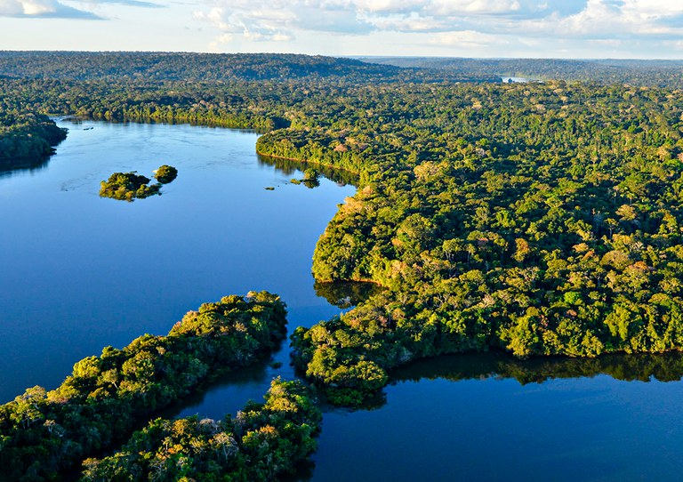

A Amazônia é vital para o equilíbrio climático global. Entender as pressões que a floresta sofre é o primeiro passo para protegê-la.

Expansão de fronteiras agrícolas e pastagens.
Visitação controlada em parques nacionais.
Recuperação espontânea de áreas degradadas.
Cerca de 80% das áreas desmatadas na Amazônia são transformadas em pastagens para criação de gado.